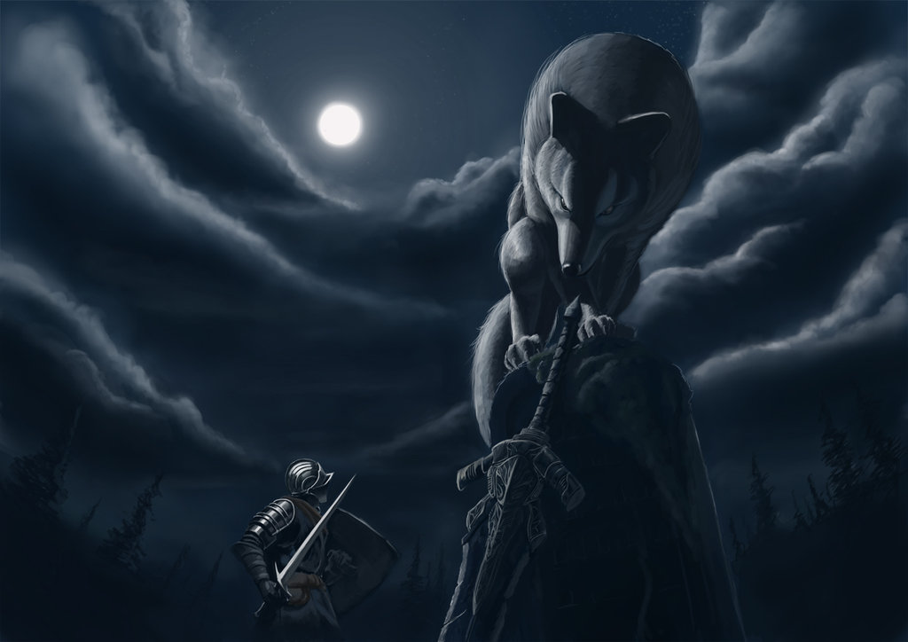
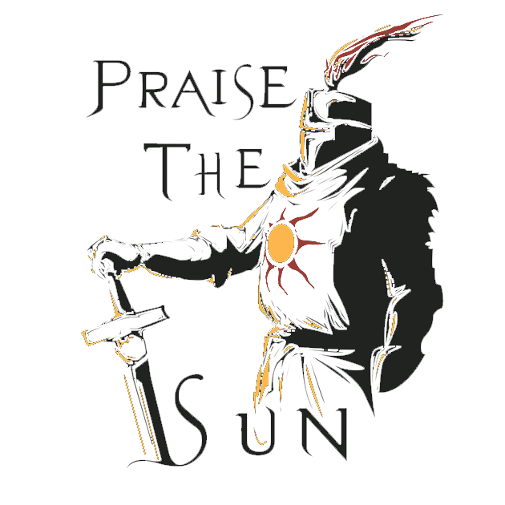
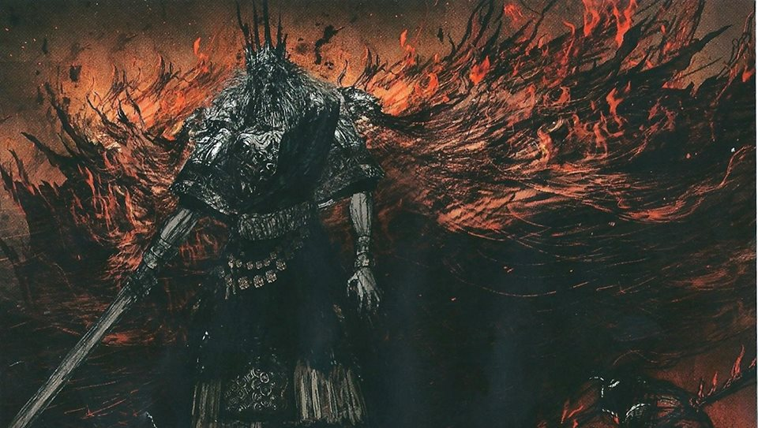
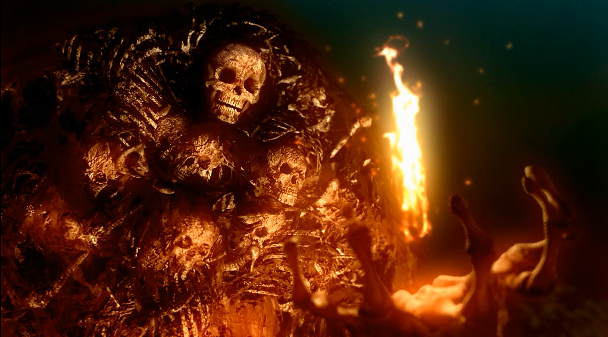
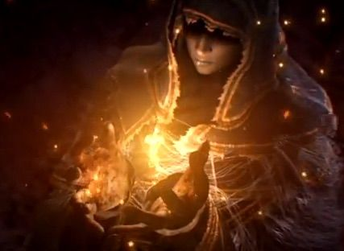
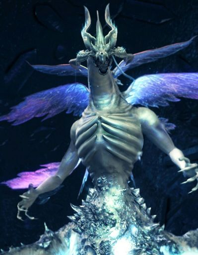
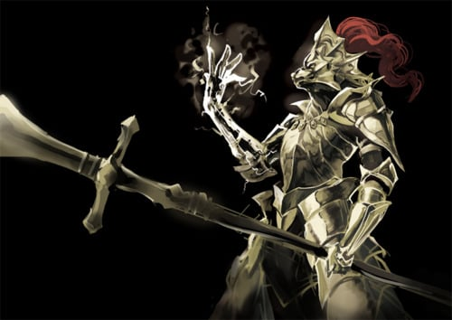
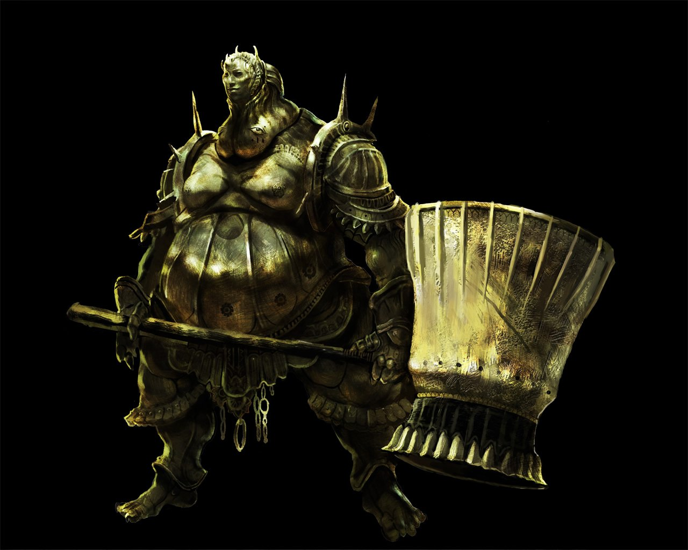
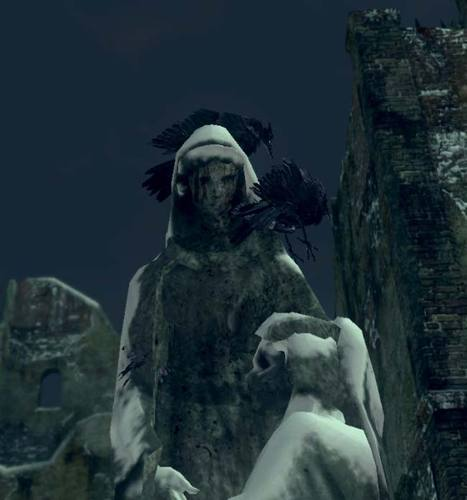

Artorias - The Abyss Walker
O mais honrado dos 4 cavaleiros de Gwyn com certeza é Artorias. Insatisfeito, foi o único que teve coragem de entrar no abismo para
tentar acabar com o mau pela raíz, enquanto os outros ficaram no castelo depois de vencer a ameaça...
As Trevas chegaram a "Oolacile". E nas Trevas, o progenitor do Abismo caminhava,e sua fúria influencia os moradores perversos da
capital, corrompendo a Humanidade existente no reino. Deles, surgiam os Darkwraiths, serventes das Trevas, destinados a absorver toda
a humanidade do planeta.
A Humanidade é necessária para perpetuar a vida do fogo, e Gwyn não tem outra escolha a não ser lidar com as Trevas de Oolacile.
Um dos quatro cavaleiros mais confiados por Gwyn, conhecido por sua determinação de aço - característica forjada por sua busca
pessoal pela glória - ansioso por sua medalha, Artorias deixa Anor Londo, a cidade dos deuses, com tudo o que é necessário para um
verdadeiro guerreiro: um confiável parceiro, e uma lâmina semelhante ao desafio sanguinário que o espera.
Artorias quase sentia certa simpatia por seus inimigos, mas eles eram nada além de discípulos das Trevas, da qual Artorias estava
protegido graças ao seu pingente, recebido como uma benção de Gwyn para auxiliar o cavaleiro. O grande guerreiro e seu fiél
companheiro, Sif, se encontravam no precipício, à beira do Abismo, desgastados pela guerra e corroídos pela mácula do Abismo.
Artorias não tem outra escolha a não ser render um pacto com os Darkwraiths, um pacto do qual se forja um anel capaz de banir toda a
energia negra existente no local de seu usuário.
Eles estavam prontos; Artorias, Sif e Manus, o Pai do Abismo, se encontravam na batalha de suas vidas. Às suas mentes, a terra tremia, e
em algum lugar, nos confins da Terra, o mal é derrotado, e assim nasce o herói Artorias, o Abysswalker. Ou ao menos, é o que a lenda diz.

Great Grey Wolf Sif
Sif, o Lobo Cinzento, é o companheiro de Artorias e amigo de Alvina. Diferente da gata, Sif não fala a língua humana. Sif auxiliou
Artorias a lutar contra as criaturas do Abismo que infestaram o reino de Oolacile, e juntamente com seu mestre, atravessou as Trevas
para destruir Manus. Quando Artorias foi vencido, o cavaleiro usou seu escudo para proteger Sif, que escapou ileso da expansão do
Abismo e destruição de Oolacile.
Centenas de anos após o ocorrido, o lobo ainda se mantém fiel ao seu dono e guarda consigo o anel forjado por Artorias para atravessar
o Abismo, protegendo até hoje seu túmulo em Darkroot Garden de invasores, que atravessam a floresta de Lordran para saquear seus
bens. O motivo do tamanho de Sif é desconhecido, bem como a sua afiliação com Artorias.

Solaire of Astora - The Warrior of the Sun
"Eu sou Solaire of Astora, um subordinado do Lord of Sunlight.
Agora que sou Undead, vim a esta maravilhosa terra, terra-natal do Lord Gwyn, para procurar o meu próprio sol!"
—Solaire of Astora.
Ele é um excelente guerreiro que intencionalmente se tornou Undead para poder ir a Lordran na sua missão para encontrar o sol. Ele
tornou-se um favorito dos fans de Dark Souls devido à sua atitude jovial e diálogo memorável. Existe alguma especulação que ele é o
primeiro filho de Lord Gwyn, o Deus da Guerra que perdeu o seu estatuto de divindade. Dependendo das ações do jogador em Lost
Izalith, Solaire pode se tornar uma ajuda para o boss final, ou eventualmente ser consumido pela loucura e o jogador será forçado a
matá-lo.

Gwyn - Lord of Sunlight
No início da Era do Fogo, Gwyn descobriu uma alma de Senhor na Chama Primordial, junto a Gravelord Nito e a Bruxa de Izalith, se
tornando assim o Senhor da Luz do Sol. Eles se aliaram a Seath, o Sem Escamas e formaram um exército, e com seus poderes,
desafiaram os antigos dragões sobre o domínio da Terra. Gwyn usou seus poderosos raios para partir as escamas de pedra dos dragões,
que, ao final da batalha, foram totalmente extintos.
Quando a Chama começou a desaparecer, Gwyn deixou Anor Londo, a cidade dos deuses, e partiu para a câmara da Chama Primordial,
temendo o início da Era das Trevas e o curso da natureza. Quando ele saiu, dividiu seu poder entre seus filhos e partes da sua alma para
os Quatro Reis e Seath.
Gwyn obteve sucesso em reacender a Chama, mas sacrificou parte de sua alma no processo, sendo reduzido ao Deus das cinzas e se
tornando um Hollow.

Gravelord Nito
Nito, o Primeiro dos Mortos, é a manifestação primordial da morte, um dos Senhores originais a encontrar sua alma dentro da Chama
Primordial no início da Era do Fogo. Nito administra a morte de toda vida, e boa parte do poder da sua alma foi doado para a própria
morte. Ele, juntamente com os outros Senhores, guerreou contra os antigos dragões pelo domínio da Terra, lançando o seu miasma de
morte e doenças sobre eles.
Após a guerra contra os dragões, Nito retornou à sua tumba, onde ele descansa e protege sua alma de Senhor. Viajantes que tomam o seu
caminho pelo reino de Lordran até a tumba de Nito podem formar um pacto com o Senhor e se tornarem seus serventes.

Witch of Izalith
A Bruxa de Izalith é a bruxa do fogo e foi uma das divindades a destruir os dragões no início da Era do Fogo, tecendo uma tempestade
de fogo contra as criaturas. Ela é a mãe de Ceaseless Discharge e das Filhas do Caos, e foi um dos Senhores originais a encontrar sua
alma na Chama Primordial
Temendo o início da Era das Trevas, a bruxa tentou ambiciosamente criar uma réplica da Chama, mas da cópia nasceu uma aberração
incontrolável: a Chama do Caos.
A Chama do Caos afundou a cidade de Izalith em lava e consumiu a Bruxa e parte de suas filhas, se tornando o Berço do Caos, o
progenitor de todos os demônios. Duas delas conseguiram escapar parcialmente: Quelaag e sua irmã, que tiveram parte de seus corpos
deformada pela Chama do Caos. Quelana conseguiu escapar sã do acidente, e ao moldar o poder do fogo, ela criou a piromancia. Ela
ensinou essa prática a Salaman, que espalhou a arte do fogo para o mundo dos humanos.

Seath the Scaleless
Seath, o Sem Escamas, é um Dragão albino, e foi o traidor que abandonou sua espécie e ajudou os deuses na guerra no início da Era do
Fogo. Seath possui o cristal primordial, um objeto sagrado encontrado durante a guerra contra os Dragões, que garante ao seu dono a
imortalidade, que Seath não possuía pela falta das escamas de pedra que protegiam os outros Dragões. Graças ao seu papel durante a
guerra, Seath foi coroado como duque por Gwyn, e recebeu um fragmento de sua alma de Senhor.
Após a guerra, Seath se tornou obcecado pelas escamas de pedra, e assim construiu um laboratório de pesquisas com a finalidade de
recriá-las. Sua obsessão pelas pesquisas eventualmente o enlouquece, e Seath passa a fazer diversos experimentos em humanos e outras
criaturas, que acabaram se transformando em aberrações.
Seath é considerado o pai da feitiçaria, pois diversas formas magias foram criadas em seu laboratório graças aos estudos com cristais e
humanos.

Dragon Slayer Ornstein
Ornstein é uma divindade e está no patamar dos Quatro Cavaleiros mais confiados por Gwyn, sendo considerado o general de seu
exército. Acredita-se que Ornstein ajudou Gwyn na batalha contra os Dragões no início da Era do Fogo com sua lança, que, segundo as
lendas, possui a capacidade de partir uma rocha ao meio.
Sua armadura dourada se assemelha a um leão e, assim como sua lança, foi forjada com o poder dos raios de Gwyn. Ornstein é o último
sobrevivente do legado dos Quatro Cavaleiros e agora atua como o guardião da princesa Gwynevere, ao lado de seu braço direito,
Smough.

Executioner Smough
Smough adquiriu seu título de Carrasco por matar suas vítimas impiedosamente e pelo seu costume de devorar seus cadáveres. É o
braço direito de Ornstein e utiliza uma armadura e martelo dourados assim como seu companheiro. Não se sabe, em fim, como ele
adquiriu seus equipamentos.
Aparentemente, Smough não participou da guerra contra os Dragões e se juntou aos deuses graças a sua proximidade com Ornstein.
Apesar de seu desejo de fazer parte do legado dos Quatro Cavaleiros, Smough foi rejeitado diretamente por Gwyn, como consequência
de seus atos canibais. Apesar disso, Smough aparentemente se mantém fiel ao seu serviço de proteger os deuses e atua como o guardião
da princesa Gwynevere, ao lado de Ornstein.

Velka, Goddess of Sin
Velka é a deusa do pecado e uma entidade cheia de mistérios. Pouco se sabe sobre ela além de meras especulações. Sua imagem é
frequentemente associada ao corvo, e acredita-se que os corvos humanoides habitantes do Mundo Pintado de Ariamis tenham sido seus
antigos seguidores. Estátuas representando uma imagem feminina encontradas em New Londo e no Mundo Pintado geralmente são ditas
como a representação da própria deusa.
Especula-se que ela seja a líder da antiga rebelião oculta, já que muitos de seus armamentos podem ser encontrados descartados
juntamente com vários utensílios relacionados à Velka no Mundo Pintado. Plausível de se ter ligações com a lenda do surgimento de um
escolhido entre os amaldiçoados para salvar a humanidade, assim como a possibilidade de ser a dona do Corvo Gigante que habita
Firelink Shrine
Várias entidades no mundo a fora possuem conexões com Velka, como os bispos perdoadores da Velka e Arstor, o conde de Carim.
Também é frequentemente associada aos Blades of the Darkmoon, seita liderada por Dark Sun Gwyndolin, talvez por rivalidade, talvez
por parceria.